线性方程组#
\(\quad\)线性方程组是线性代数的核心。我们会介绍有关线性方程组的一些基本却又重要的概念，以及求解一个线性方程组的一个系统方法（高斯消元）.
参考：
《线性代数及其应用》第五版
3Blue1Brown科普视频-线性代数的本质，地址：https://www.bilibili.com/video/av6731067
《Introduction to Data Mining》
1.线性方程组#
\(\quad\)包含未知数\(x_{1},x_{2},\cdots,x_{n}\)的一个线性方程如下所示：
而线性方程组是由一个或多个包含相同变量\(x_{1},x_{2},\cdots,x_{n}\)的线性方程组成的，例如：
线性方程组的一组解就是一组数\((s_{1},s_{2},\cdots,s_{n})\)，用这组数替代线性方程组中的\(x_{1},x_{2},\cdots,x_{n}\)时方程两边成立。方程组所有的解称为该线性方程组的解集。
\(\quad\)若一个线性方程组有解（唯一解或无穷多解），我们称这个线性方程组是相容的；若无解，则称它为不相容的。
\(\quad\)线性方程组包含的主要信息可以通过矩阵来表示，以上式为例子，我们可以将原方程组写为
将每一个变量的系数写在对齐的一列中，形成系数矩阵：
如果我们把系数和等式右边的常数写在一个矩阵，我们称之为增广矩阵，如下所示：
2.高斯消元法求解线性方程组#
\(\quad\)每一个学过线性代数的学生都学过高斯消元，它可被用于求解线性方程组、求逆矩阵等。算法主要思路就是对一个矩阵进行一系列初等行变换，将其转换为一个阶梯型矩阵进而求解。
\(\quad\)阶梯型矩阵的形式如下图所示。其中阶梯型矩阵的每一行的首个非零元素我们称之为主元，主元所在的列称之为主元列。阶梯型矩阵中主元所在列，主元以下全为0；某一行的主元所在列位于前一行主元的右边。
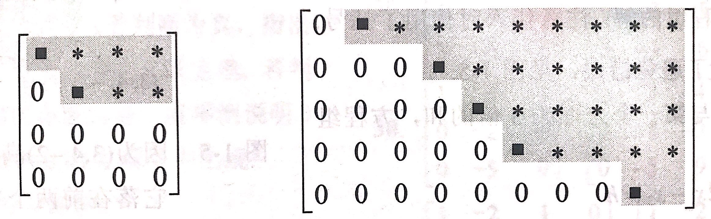
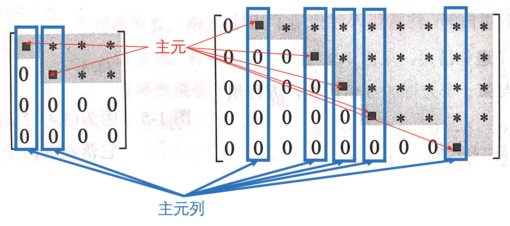
\(\quad\)矩阵的初等行变换包括以下三个操作。当一个矩阵A经过一系列初等行变化变为矩阵B，它们是行等价的；两个线性方程组的增广矩阵行等价时，它们的解集是相同的。
（倍加变换）把某一行换成它本身与另一行的倍数的和；
（对换变换）把两行对换；
（倍乘变换）把某一行的所有元素乘以同一个非零数。
2.1算法流程#
\(\quad\)我们先前提及过，高斯消元的主要思路是借助初等行变换将原增广矩阵行化简为一个阶梯型矩阵。我们通过一个例子来讲解算法的具体流程。
1.先求第一行主元。找出第一行、第一列中绝对值最大元素所在行i，接着交换第i行和第一行。第一行通过倍加变换、倍乘变换将第一行第一列以下的元素清0：
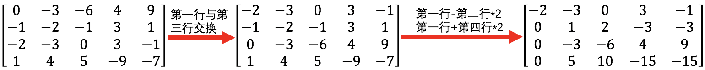
2.求第二行主元。找出第二行、第二列中绝对值最大元素所在行i，接着交换第i行和第二行。第二行通过倍加变换、倍乘变换将第二行第二列以下的元素清0：
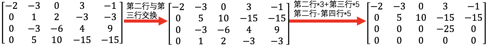
3.以此类推，直至矩阵为一个阶梯型矩阵。如果消元过程中所求位置为0，则切换至下一列继续消元；过程中如果已经为阶梯型矩阵则结束算法。
\(\quad\)最后推得下式。将增广矩阵还原回线性方程组，我们称对应于主元列的变量\(x_{1},x_{2},x_{4}\)为基本变量，其他变量\(x_{3}\)为自由变量。
\(\quad\)算法中选择一列中绝对值最大的元素作为主元，是为了减少计算中的舍入误差。解矩阵方程还可用克拉默法则。
向量与矩阵方程#
\(\quad\)向量和矩阵贯穿整个线性代数，除了可以描述线性方程组，在几何意义上更是大有作为。在本节中我们将会初步介绍向量和矩阵方程，建立一个初步的概念。
1.向量#
\(\quad\)仅含一列的矩阵称之为列向量，简称为向量。所有元素都为0的向量称为零向量，用\(\mathbf{0}\)表示。向量通常写为\(n\times1\)列矩阵的形式，如
\(\quad\)向量之间可以进行加减法得到新的向量（平行四边形法则）；也支持和实数做标量乘法，即向量中的每个元素和该实数做乘法得到新的向量。
\(\quad\)若\(n\)是正整数，\(\Bbb{R}^n\)表示所有具有\(n\)个元素的向量的集合。\(\Bbb{R}^2\)可以理解为一个平面上的直角坐标系，那么\(\Bbb{R}^2\)中的每个向量\(\mathbf{u}=\begin{bmatrix}u_{1}\\u_{2}\end{bmatrix}\)可看作是平面上的一个点\((u_{1},u_{2})\)，或者看成是平面上的一个从原点指向\((u_{1},u_{2})\)的有向箭头，如图：
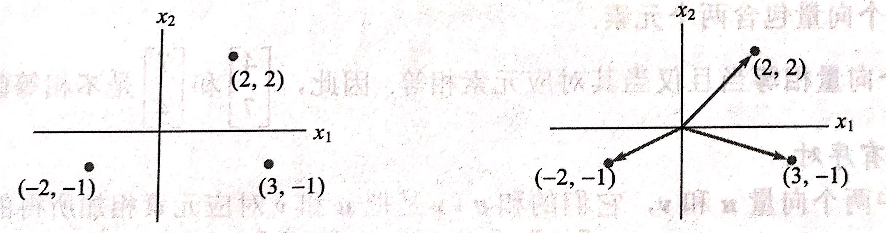
1.1 线性组合#
\(\quad\)给定\(\Bbb{R}^n\)中向量\(\mathbf{v}_{1},\mathbf{v}_{2},\cdots,\mathbf{v}_{p}\)和标量\(c_{1},c_{2},\cdots,c_{p}\)，向量
称为向量\(\mathbf{v}_{1},\mathbf{v}_{2},\cdots,\mathbf{v}_{p}\)以\(c_{1},c_{2},\cdots,c_{p}\)为权的线性组合。线性组合在几何上可以理解为是原点沿着向量的移动，也可理解为是向量伸缩后的相加，例如：
其中\(\mathbf{v}_{1},\mathbf{v}_{2}\)在\(\Bbb{R}^2\)中表示如下图所示：
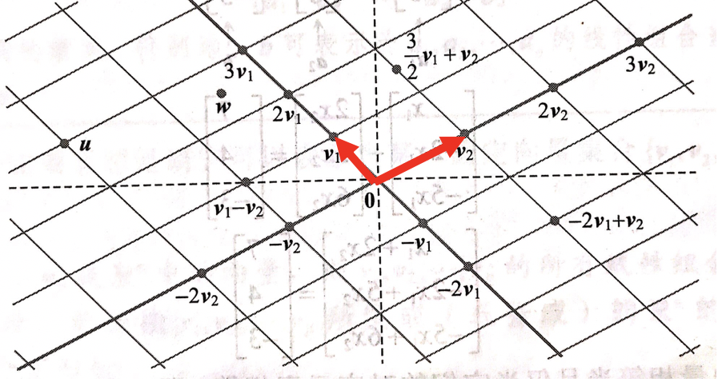
接着我们在图中表示出线性组合\(\mathbf{u}=3\mathbf{v}_{1}-2\mathbf{v}_{2}\)的生成过程。其中左图的线性组合表示为：原点分别沿着\(3\mathbf{v}_{1}\)、\(-2\mathbf{v}_{2}\)生成所求\(\mathbf{u}\)；右图的线性组合表示为：向量\(3\mathbf{v}_{1}\)、\(-2\mathbf{v}_{2}\)的一次相加（平行四边形法则）。
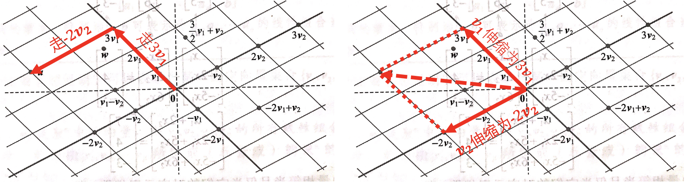
\(\quad\)线性代数的一个主要思想是研究可以表示为某一固定向量集合\(\{\mathbf{v}_{1},\mathbf{v}_{2},\cdots,\mathbf{v}_{p}\}\)的线性组合的所有向量（基）。若\(\mathbf{v}_{1},\cdots,\mathbf{v}_{p}\)是\(\Bbb{R}^n\)中的向量，则\(\mathbf{v}_{1},\cdots,\mathbf{v}_{p}\)的所有线性组合所成的集合用记号\(Span\{\mathbf{v}_{1},\cdots,\mathbf{v}_{p}\}\)表示，称为由\(\mathbf{v}_{1},\cdots,\mathbf{v}_{p}\)所生成（张成）的\(\Bbb{R}^n\)的子集。更具体地说，\(Span\{\mathbf{v}_{1},\cdots,\mathbf{v}_{p}\}\)是所有形如：
的向量集合。特别地，一定包含零向量。
\(\quad\)要判断向量\(\mathbf{b}\)是否属于\(Span\{\mathbf{v}_{1},\cdots,\mathbf{v}_{p}\}\)，就是判断向量方程
是否有解，或等价地，判断增广矩阵为\(\begin{bmatrix}\mathbf{v}_{1}&\cdots&\mathbf{v}_{p}&\mathbf{b}\end{bmatrix}\)的线性方程组是否有解。
2.矩阵方程#
\(\quad\)线性代数中的一个基本思想是把向量的线性组合看作矩阵与向量的积。
\(\quad\)若\(A\)是\(m\times n\)矩阵，它的各列为向量\(\mathbf{a}_{1},\cdots,\mathbf{a}_{n}\)。若\(\mathbf{x}\)是\(\Bbb{R}^n\)中的向量，则\(A\)与\(\mathbf{x}\)的积就是**\(A\)的列向量以\(\mathbf{x}\)中对应元素为权的线性组合**，即
观察该式我们也能看出，\(A\)的列数必须等于\(\mathbf{x}\)的行数。举例：
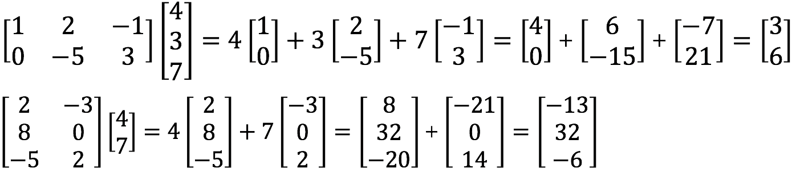
\(\quad\)回到线性方程组，要将一个线性方程组表示成一个矩阵方程，我们只需要表示为系数矩阵与变量向量相乘即可，例如：
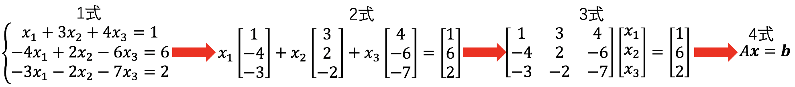
由图可以看出，这三种方程形式的解集都是一致的。2、3式表明：判断该线性方程组是否有解，等价于判断\(\mathbf{b}\)是否是\(A\)的列向量的一个线性组合（或者说\(\mathbf{b}\)是否属于\(Span\{\mathbf{v}_{1},\cdots,\mathbf{v}_{n}\}\)）。
2.1齐次线性方程组与线性无关#
\(\quad\)我们称\(A\mathbf{x}=\mathbf{0}\)为齐次线性方程组。这样的方程组至少有一个解，即\(\mathbf{x}=\mathbf{0}\)，这个解也称之为平凡解，我们往往更关注的是方程组的非平凡解。
\(\quad\)假设\(\{\mathbf{v}_{1},\cdots,\mathbf{v}_{n}\}\)为\(\Bbb{R}_{n}\)的一组向量，我们定义有：
若向量方程\(x_{1}\mathbf{v}_{1}+\cdots+x_{p}\mathbf{v}_{p}=\mathbf{0}\)仅有平凡解，称\(\mathbf{v}_{1},\cdots,\mathbf{v}_{n}\)为线性无关；
若向量方程\(x_{1}\mathbf{v}_{1}+\cdots+x_{p}\mathbf{v}_{p}=\mathbf{0}\)存在非平凡解\(c_{1},\cdots,c_{p}\)，称\(\mathbf{v}_{1},\cdots,\mathbf{v}_{n}\)为线性相关。
\(\quad\)从矩阵方程的视角来看，矩阵\(A\)的各列线性无关，当且仅当齐次线性方程组\(A\mathbf{x}=\mathbf{0}\)仅有平凡解。
2.2矩阵的积#
\(\quad\)两个矩阵相乘\(A\times B\)可以看做是\(B\)的每个列向量与\(A\)作一次乘法形成新的矩阵。具体如下所示：
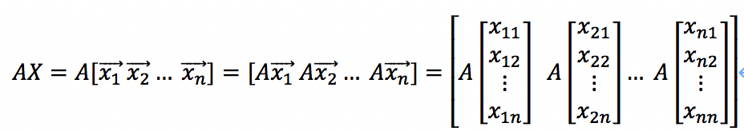
类似进行了\(n\)次矩阵方程的计算。
1.矩阵运算#
\(\quad\)若\(A\)是\(m\times n\)，即有\(m\)行\(n\)列的矩阵。\(A\)的第\(i\)行第\(j\)列元素用\(a_{ij}\)表示，称为\(A\)的\((i,j)\)元素。
\(\quad\)特别地，我们介绍几个特殊矩阵：
单位矩阵\(I_{n}\)，对角线上元素全为1，非对角线上元素全为0；
对角矩阵，是一个方阵，它的非对角线元素全为0。单位矩阵也是一个对角矩阵；
零矩阵，矩阵元素全为0。
\(\quad\)若\(A,B,C\)是相同维数的矩阵，\(r\)与\(s\)为一实数，则有：
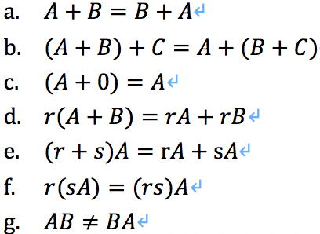
\(\quad\)设\(A\)为\(m\times n\)矩阵，\(B,C\)维数使下列各式的乘积有定义（矩阵\(A,B\)相乘，前者的列数等于后者的行数）。关于矩阵乘法则有：
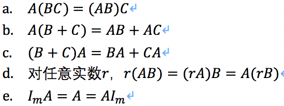
\(\quad\)矩阵的乘幂表示为\(A^{k}\)，其中\(A\)是\(n\times n\)矩阵，\(A^{k}\)表示为\(k\)个\(A\)的乘积\(A^{k}=A\cdots A\)。\(A^{0}\)为单位矩阵。
\(\quad\)矩阵的转置表示为\(A^{T}\)，其中\(A\)是一个\(m\times n\)矩阵，则\(A^{T}\)是一个\(n\times m\)矩阵，\(A^{T}\)的列是由\(A\)的行构成的。设\(A,B\)为矩阵，其维数使下列和与积有定义，则有：
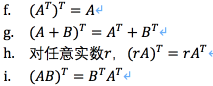
2.逆矩阵#
\(\quad\)对于一个矩阵\(A\)来说，若存在一个矩阵\(C\)使得下式成立：
那么矩阵\(C\)称为矩阵\(A\)的逆矩阵，若这样的\(C\)存在，我们称矩阵\(A\)是可逆矩阵。我们将\(C\)写为\(A^{-1}\)，于是
不可逆矩阵也称之为奇异矩阵，可逆矩阵也称为非奇异矩阵。可逆矩阵一定是方阵。
\(\quad\)下面是有关可逆矩阵的基本定理，假设\(A\)可逆：
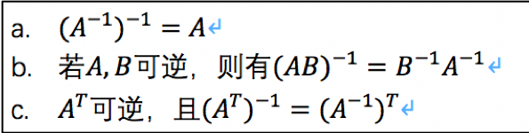
2.1伴随矩阵求逆矩阵#
\(\quad\)伴随矩阵求矩阵的逆是一种常用的手算算法，是借助高斯消元的一种算法。假设求矩阵\(A\)的逆矩阵，将同维度的单位矩阵\(I\)与\(A\)构成增广矩阵\([A \quad I]\)，要么有一系列行变换把\(A\)变成\(I\)，同时\(I\)变成\(A^{-1}\)；要么A是不可逆的。例如：
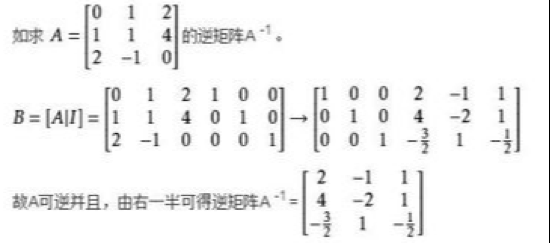
伴随矩阵求逆矩阵时间复杂度过大，只适合于手算；计算机中求逆矩阵会借助矩阵的\(LUP\)分解。还可以通过逆矩阵公式求\(A^{-1}\)。
2.2逆矩阵求解方程#
\(\quad\)求出一个矩阵的逆矩阵有啥么用？可逆矩阵的一个重要的性质就是求解矩阵方程。
\(\quad\)若\(A\)可逆，则对每一个\(\Bbb{R}^{n}\)中的\(\mathbf{b}\)，方程\(A\mathbf{x}=\mathbf{b}\)都有唯一解：\(\mathbf{x}=A^{-1}\mathbf{b}\)。
\(\quad\)我们举例如下：
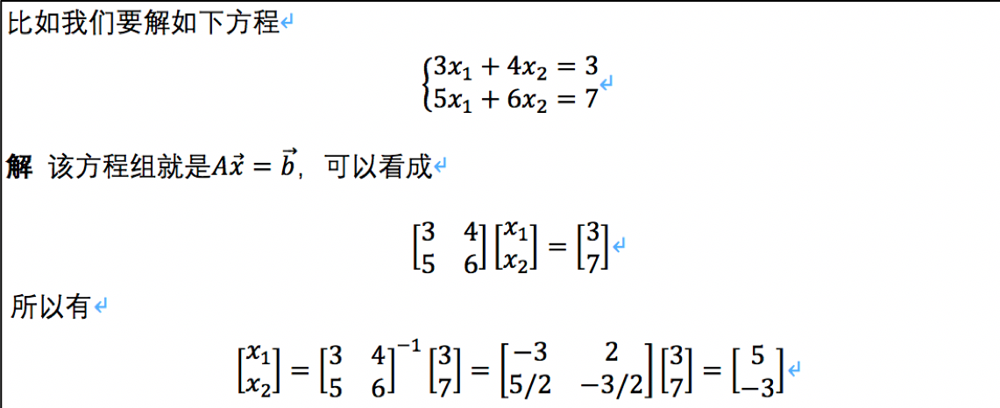
2.3可逆矩阵定理#
\(\quad\)我们将逆矩阵和线性方程组的概念结合一起，称为可逆矩阵定理。设\(A\)为\(n\times n\)矩阵：
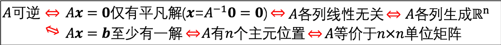
\(\quad\)利用可逆矩阵定理，我们可以从不同的角度去判断一个矩阵\(A\)是否可逆，例如给出一个矩阵\(A\):
对\(A\)做初等行变换，判断主元个数：
\(A\)有三个主元，故\(A\)是可逆的。
1.行列式#
\(\quad\)行列式是一个函数，可将一个方阵\(A\)映射为一个标量，记作\(det(A)\)或\(|A|\)，只有方阵才能计算行列式。如果矩阵维度为\(n\times n\)，其行列式也称为\(n\)阶行列式。
1.1行列式的计算#
\(\quad\)先给出\(2\times 2\)矩阵和\(3\times 3\)矩阵的行列式计算公式：
\(|A|=\begin{vmatrix} a_{11} & a_{12}\\ a_{21} & a_{22} \end{vmatrix} =a_{11}a_{22}-a_{12}a_{21}\)
\(|A|=\begin{vmatrix} a_{11} & a_{12} & a_{13}\\ a_{21} & a_{22} & a_{23}\\ a_{31} & a_{32} & a_{33} \end{vmatrix} =a_{11}a_{22}a_{33}+a_{12}a_{23}a_{31}+a_{13}a_{21}a_{32}-a_{11}a_{23}a_{32}-a_{12}a_{21}a_{33}-a_{13}a_{22}a_{31}\)
\(\quad\)接着我们来讲解计算行列式的一般公式，先引入余子式和代数余子式的概念。在\(n\)阶行列式中，把元素\(a_{ij}\)所在行列在矩阵中删去后，余下的\(n-1\)阶行列式叫做\(a_{ij}\)元素的余子式，记作\(M_{ij}\)，同时\(A_{ij}=(-1)^{i+j}M_{ij}\)叫做\(a_{ij}\)的代数余子式。要注意的是，余子式和代数余子式均为行列式，且行列式的阶越低越容易计算。余子式和代数余子式的例子如下所示：
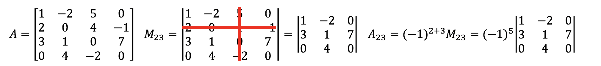
\(\quad\)行列式的计算可以某一行或某一列的元素乘以它对应的代数余子式的累加：
具体沿着哪一行或者哪一列的展开是要依据情况而定。例如：
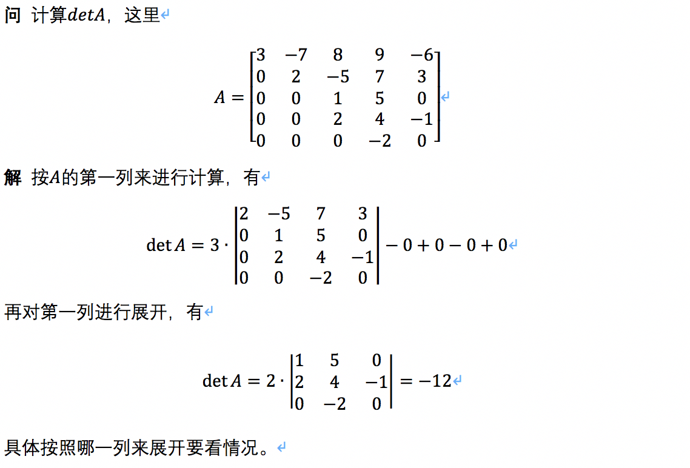
1.2行列式的性质与可逆矩阵定理#
\(\quad\)在我们的具体计算过程中，可以借助行列式的行变换性质帮我们简化运算，矩阵\(A\)是一个方阵：
若\(A\)的某一行的倍数加到另一行得矩阵\(B\)，则\(|B|=|A|\)；
若\(A\)的两行互换得矩阵\(B\)，则\(|B|=-|A|\)；
若\(A\)的某行乘以\(k\)倍得到矩阵\(B\)，则\(|B|=k\cdot |A|\)；
\(|A|=|A|^{T}\)，这证明了行列式的列变换和行变换具有一样的效果;
若\(A,B\)均为\(n\times n\)矩阵，则\(|AB|=|A||B|\).
根据行列式的性质，我们在计算一个矩阵的行列式时，可以先对其进行一系列的行变换使其化简为阶梯型矩阵，这时直接计算对角线上的元素乘积即可，大约需要\(2n^{3}/3\)次运算次数。例如：
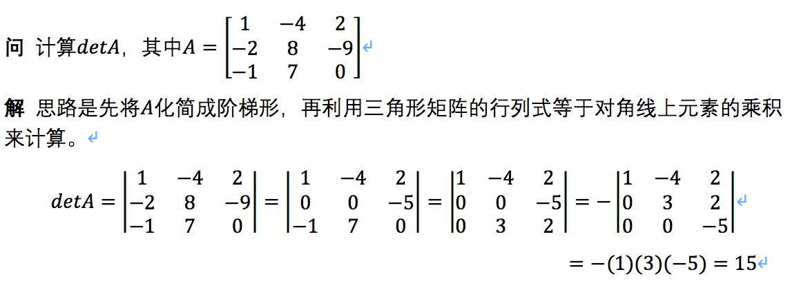
\(\quad\)如果一个\(n\times n\)矩阵经过一系列行变换形成阶梯型矩阵，具有\(n\)个主元（对角线上元素均不为0），说明\(|A|\neq 0\)，再结合回可逆矩阵定理，可以得出结论：\(A\)可逆当且仅当\(|A|\neq 0\)，可逆矩阵定理可再做补充：
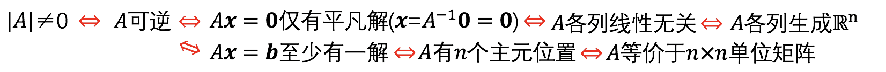
1.3克拉默法则#
\(\quad\)克拉默法则在各种理论计算中是必需的。例如，可以被用来研究\(A\mathbf{x}=\mathbf{b}\)的解受\(\mathbf{b}\)中元素的变化而受到什么样的影响。
\(\quad\)设\(A\)是一个可逆的\(n\times n\)矩阵，对\(\Bbb{R}^{n}\)中任意向量\(\mathbf{b}\)，方程\(A\mathbf{x}=\mathbf{b}\)的唯一解可由下式给出：
$\(x_{i}=\frac{|A_{i}(\mathbf{b})|}{|A|},i=1,2,\dots,n\)\(
其中\)A_{i}(\mathbf{b})\(表示\)A\(中第\)i\(列由向量\)\mathbf{b}$替换：
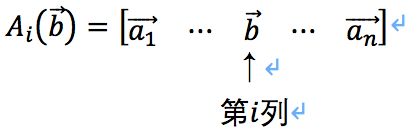
\(\quad\)例如：
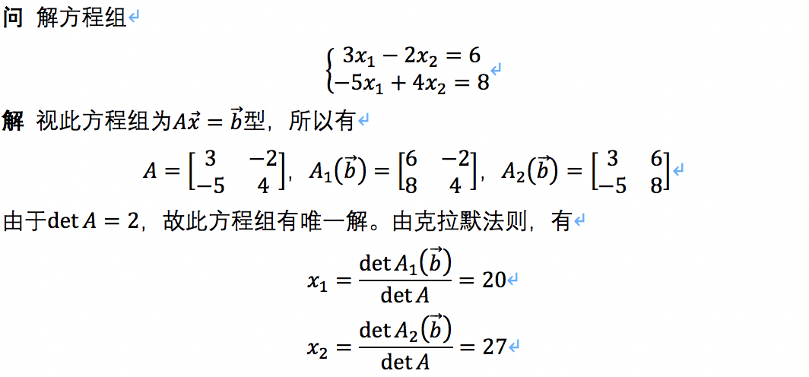
\(\quad\)必须说明的是，克拉默法则对一个很大的矩阵是无效的，仅计算一个行列式就大约与用行化简解\(A\mathbf{x}=\mathbf{b}\)有相同的工作量。
1.4逆矩阵公式#
\(\quad\)设\(A\)是一个可逆的\(n\times n\)矩阵，则\(A^{-1}=\frac{1}{|A|}adj(A)\)。其中\(adj(A)\)为矩阵\(A\)的伴随矩阵，是由代数余子式组成的矩阵的转置： $\( adj(A)=\begin{bmatrix}{} A_{11} & \cdots & A_{1n}\\ \vdots & \ddots & \vdots\\ A_{n1} & \cdots & A_{nn} \end{bmatrix}^{T} =\begin{bmatrix} A_{11} & \cdots & A_{n1}\\ \vdots & \ddots & \vdots\\ A_{1n} & \cdots & A_{nn} \end{bmatrix} \)\( \)\quad$用一个例子来说明
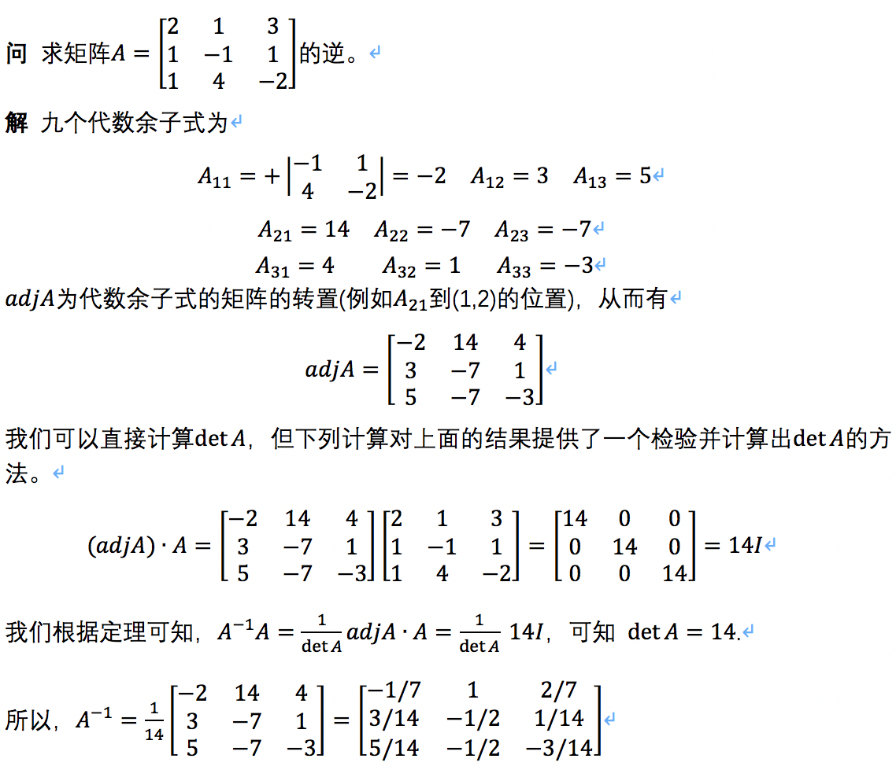
\(\quad\)逆矩阵公式也印证了行列式与逆矩阵的关系：矩阵可逆当且仅当行列式不为零。
1.5行列式的几何意义#
\(\quad\)《线性代数及其应用》这本书除了讲解基本的定理外，还会给出对一些概念的几何解释。它让我们眼里的线代是生动的，而了解几何意义也会帮助我们更好地去学习线代。这里我们会去解释行列式的几何意义.
\(\quad\)这里先给出结论：矩阵代表了一种线性变换，而行列式绝对值代表了这种线性变换下面积/体积的缩放比例。
\(\quad\)听起来很难理解？举个简单的例子是最好的入门。若\(A\)是一个\(2\times 2\)的对角矩阵，那么其行列式为：
可能不够直观，我们在平面直角坐标系下观察，矩阵的列向量在坐标系下显示出来，如下图所示：
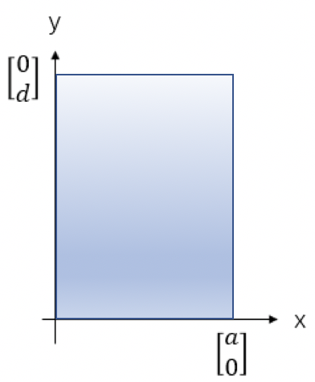
\(\quad\)上述小例子会帮助你去更好地理解。现在我们试着去将这种几何意义表达出来，我们从\(2\times 2\)的单位阵\(A\)出发，将其线性变换为其他的矩阵，观察面积以及其绝对值的变化：
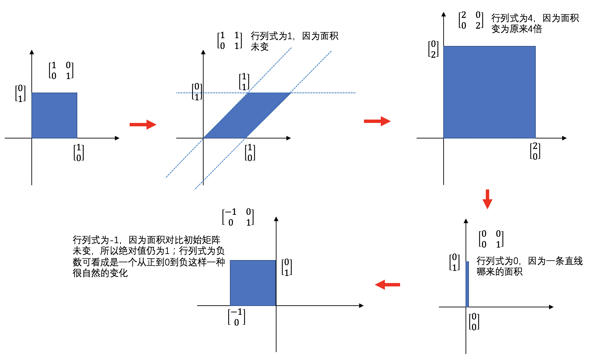
希望大家在脑子里想象这个面积变化过程。因为初始矩阵的面积为1，因此每次变化的面积为行列式的绝对值（缩放比例乘以1等于缩放比例）。根据行列式的几何意义，我们可以去计算某些几何图形的面积，例如椭圆形，如下所示：
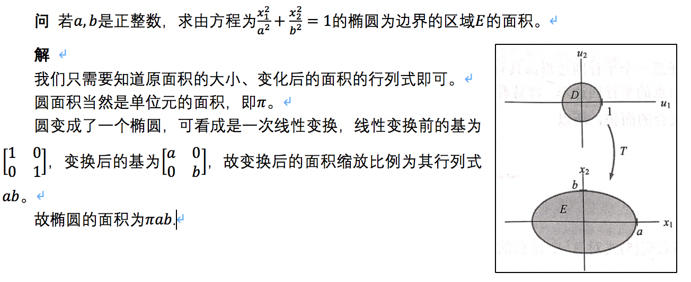
1.向量空间#
\(\quad\)实际上我们在向量与矩阵方程中已经介绍过向量空间的一些概念了，这次我们打算更深入而具体地讨论向量空间为何物。
\(\quad\)一个向量空间是由一些向量构成的非空集合\(V\)，在这个集合上定义了两个运算：加法和标量乘法，服从以下公理，这些公理必须对\(V\)中所有向量\(\mathbf{u},\mathbf{v},\mathbf{w}\)及所有标量\(c,d\)成立:
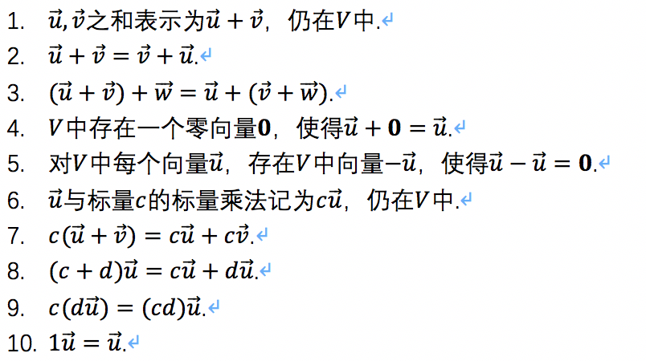
定理说明了向量空间中零向量是唯一且必须存在的。
1.1子空间#
\(\quad\)子空间是由一个向量空间中适当的向量的子集所构成。在此情形下，向量空间的十个公理我们只需要验证三个，其余的自然成立。
\(\quad\)因此我们可以说，向量空间\(V\)的一个子空间是\(V\)的一个满足性质的子集\(H\):
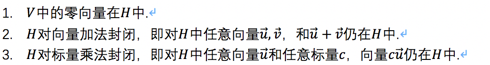
\(\quad\)每个子空间都是一个向量空间，每个向量空间都是一个子空间(针对本身或更大的空间而言)。特别地，向量空间\(V\)中仅由零向量组成的集合是\(V\)中一个子空间，成为零子空间，写成\(\{\mathbf{0}\}\)。
\(\quad\)对两个向量空间，若其中一个在另一个内部，此时子空间这个词被使用，如下图所示，\(H\)为\(V\)的一个子空间:
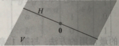
1.2由集合生成的子空间#
\(\quad\)式子\(Span\{\mathbf{v}_{1},\dots,\mathbf{v}_{n}\}\)表示为一组向量\(\mathbf{v}_{1},\dots,\mathbf{v}_{n}\)的所有线性组合所张成的\(\Bbb{R}^{n}\)的子集。现在我们给出证明，以\(Span\{\mathbf{v}_{1},\mathbf{v}_{2}\}\)为例：
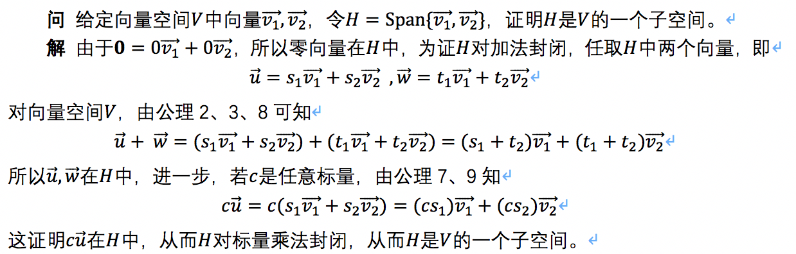
为此我们可以推广出，若从一个向量空间\(V\)中取出一组向量\(\mathbf{v}_{1},\dots,\mathbf{v}_{p}\)，则\(Span\{\mathbf{v}_{1},\dots,\mathbf{v}_{p}\}\)是\(V\)的一个子空间。
\(\quad\)为了能更好地去理解向量空间，我们往往会从很直观的一维以及二维空间中去理解。例如,\(Span\{\mathbf{v}_{1},\mathbf{v}_{2}\}\)是一个经过原点的网格线平面，\(Span\{\mathbf{v}_{1}\}\)是一个过原点的直线：
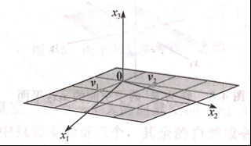
\(\quad\)我们最后举一个例子来说明该定理的作用：
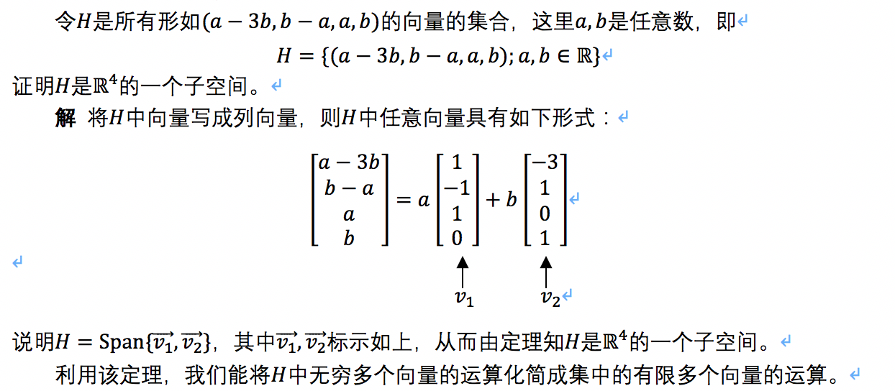
2.三个基本子空间#
2.1零空间#
\(\quad\)满足\(A\mathbf{x}=\mathbf{0}\)的所有\(\mathbf{x}\)的集合为矩阵\(A\)的零空间，\(NulA=\{\mathbf{x}:\mathbf{x}\in\Bbb{R}^{n},A\mathbf{x}=\mathbf{0}\}\)。特别地，零空间也叫核空间。
\(\quad\)要判断一个向量\(\mathbf{x}\)是否属于\(A\)的零空间，只需判断\(A\mathbf{x}\)是否为\(\mathbf{0}\)即可。
\(\quad\)从几何上理解，矩阵\(A\)是一个线性变换，若\(A\mathbf{x}=\mathbf{0}\)说明向量\(\mathbf{x}\)经过了\(A\)线性变换后变为\(\mathbf{0}\)。因此矩阵的零空间就是线性变换后落在原点的向量。例如下图所示：
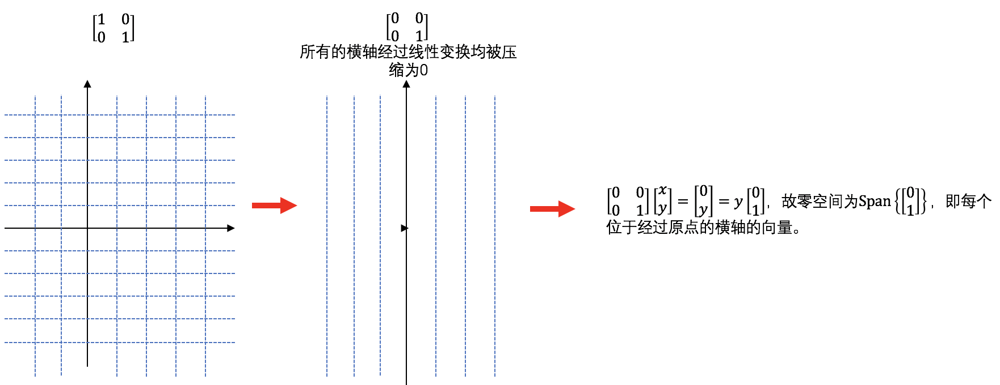
\(\quad\)零空间的基的求法可阅读基。一个\(m\times n\)的矩阵的零空间是\(\Bbb{R}^{n}\)的子空间。
2.2列空间#
\(\quad\)一个\(m\times n\)矩阵\(A\)的列向量的所有线性组合组成的向量集合称为列空间。
\(\quad\)若\(A=\begin{bmatrix}{}a_{1} & \cdots & a_{n}\end{bmatrix}\)，则\(ColA=Span\{a_{1},\cdots,a_{n}\}\)，也可以表示为\(ColA=\{\mathbf{b}:\mathbf{x}\in\Bbb{R}^{n},\mathbf{b}=A\mathbf{x}\}\)。
\(\quad\)要判断一个向量\(\mathbf{v}\)是否属于\(A\)的列空间，只需判断方程\(A\mathbf{x}=\mathbf{v}\)是否有解即可。故\(m\times n\)矩阵\(A\)的列空间等于\(\Bbb{R}^{m}\)当且仅当方程\(A\mathbf{x}=\mathbf{b}\)对\(\Bbb{R}^{m}\)中每一个\(\mathbf{b}\)有一个解。
\(\quad\)从几何上理解，矩阵\(A\)是一个线性变换，\(A\mathbf{x}=\mathbf{b}\)表明\(\mathbf{b}\)是由\(\mathbf{x}\)经过\(A\)线性变换后形成。因此每个位于列空间的向量都是从一个向量线性变换而来，如下图所示：
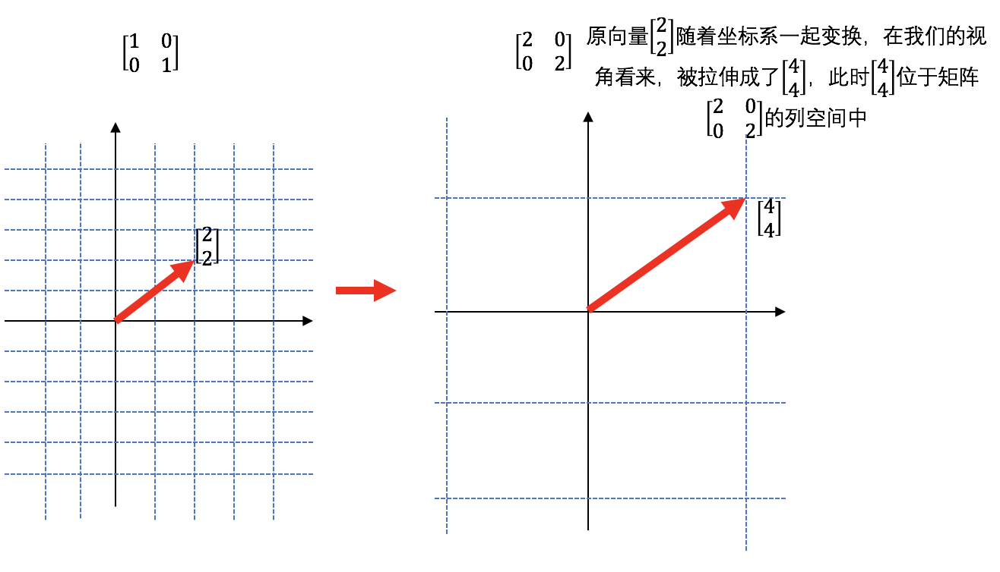
\(\quad\)列空间的基的求法可阅读基。一个\(m\times n\)的矩阵的列空间是\(\Bbb{R}^{m}\)的子空间（思索一下与零空间的不同）。
2.3行空间#
\(\quad\)一个\(m\times n\)矩阵\(A\)的每一行具有\(n\)个元素，即可以视为\(\Bbb{R}^{n}\)中的一个向量，\(A\)的行向量的所有线性组合的集合称为\(A\)的行空间，记作\(RowA\)，易知\(ColA^{T}=RowA\)。
1.基#
\(\quad\)基是刻画向量空间的基本工具，向量空间中的任何向量都可以唯一地表示成基的线性组合。
\(\quad\)如果一个向量空间\(V\)和一组向量\(\{\mathbf{v}_{1},\cdots,\mathbf{v}_{p}\}\)满足以下条件，那么这组向量被称之为\(V\)的一组基:
\(\{\mathbf{v}_{1},\cdots,\mathbf{v}_{p}\}\)是一组线性无关集；
\(\{\mathbf{v}_{1},\cdots,\mathbf{v}_{p}\}\)生成的子空间与\(V\)相同，即\(V=Span\{\mathbf{v}_{1},\cdots,\mathbf{v}_{p}\}\).
\(\quad\)例如，若\(A\)是一个可逆的\(n\times n\)矩阵，则由可逆矩阵定理可知，\(A\)的列向量组成\(\Bbb{R}^{n}\)的一组基。
\(\quad\)例如，令\(e_{i},\cdots,e_{n}\)是\(n\times n\)单位矩阵\(I_{n}\)的列，集合\(\{e_{i},\cdots,e_{n}\}\)称为\(\Bbb{R}^{n}\)的标准基，如下图所示：
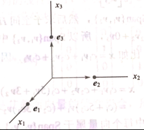
\(\quad\)通常地，我们也会将基写为矩阵的形式，例如\(\{\begin{bmatrix} 0\\ 1 \end{bmatrix} ,\begin{bmatrix} 1\\ 0 \end{bmatrix}\}\)，写成\(\begin{bmatrix} 0 & 1\\ 1 & 0 \end{bmatrix}\)。
1.1基的两个重要定理#
\(\quad\)唯一表示定理：令\(\{\mathbf{b}_{1},\cdots,\mathbf{b}_{n}\}\)称为\(V\)的一组基，则对\(V\)中的每个向量\(\mathbf{x}\)，存在唯一的一组数\(c_{1},\cdots,c_{n}\)使得：
该定理表明，向量空间中的每一个向量均可被基唯一地表示。
\(\quad\)生成集定理： 令\(S=\{\mathbf{v}_{1},\cdots,\mathbf{v}_{p}\}\)是\(V\)中的向量集，\(H=Span\{\mathbf{v}_{1},\cdots,\mathbf{v}_{p}\}\):
若\(S\)中某一向量（比如说\(\mathbf{v}_{k}\)）是\(S\)中其余向量的线性组合，则\(S\)中去掉\(\mathbf{v}_{k}\)后形成的向量仍可以生成\(H\);
若\(H\neq \{\mathbf{0}\}\)，则\(S\)的某一子集是\(H\)的一个基。
生成集定理表明，基是一个不包含不必要向量的“高效率”的生成集。
一方面，一组向量中如果其中一个向量可以表示为其他向量的线性组合，也意味着该向量已经落在了其他向量张成的空间中，并不能为空间带来新的维度。
另一方面，一个基中的每个向量如果都为张成的空间增添新的维度，它们也称之为线性无关。一个基可以通过去掉生成集中不必要的向量生成出来。
1.2零空间的基#
\(\quad\)令\(NulA\)是方程\(A\mathbf{x}=\mathbf{0}\)中所有\(\mathbf{x}\)的集合，要求矩阵的零空间的基，先解方程\(A\mathbf{x}=\mathbf{0}\)，解方程可以通过高斯消元化为阶梯型、逆矩阵等。
\(\quad\)我们给出例子来说明如何求矩阵零空间的基：
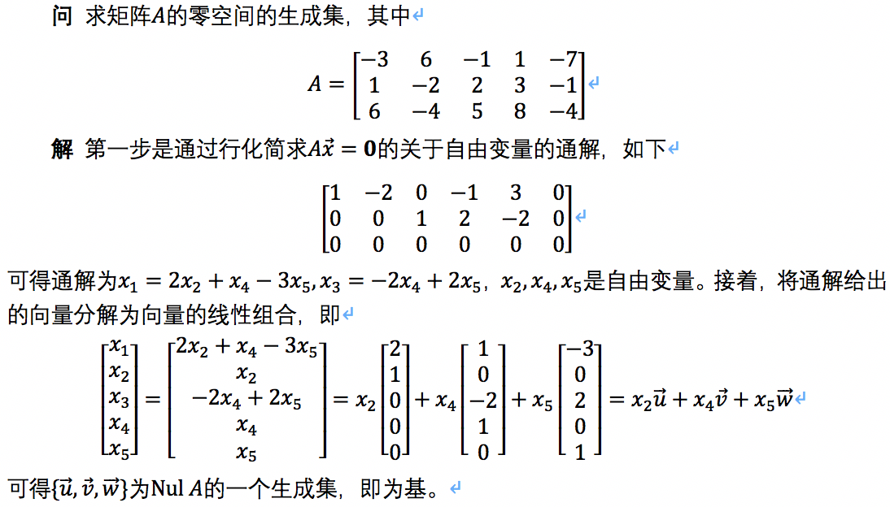
1.3列空间的基#
\(\quad\)一个矩阵\(A\)被行化简为\(B\)时，虽然两个矩阵的列通常不同，但是\(A\mathbf{x}=\mathbf{0}\)与\(B\mathbf{x}=\mathbf{0}\)有完全相同的解集，即\(A\)的列和\(B\)的列具有完全相同的线性相关关系。
\(\quad\)令\(ColA\)为矩阵\(A\)的列向量所有线性组合组成的集合，要求矩阵\(A\)的列空间的基，通常是将矩阵\(A\)行变换为阶梯型矩阵\(B\)、判断主元列位置来确定基。我们给出例子来说明如何求矩阵的列空间的基。
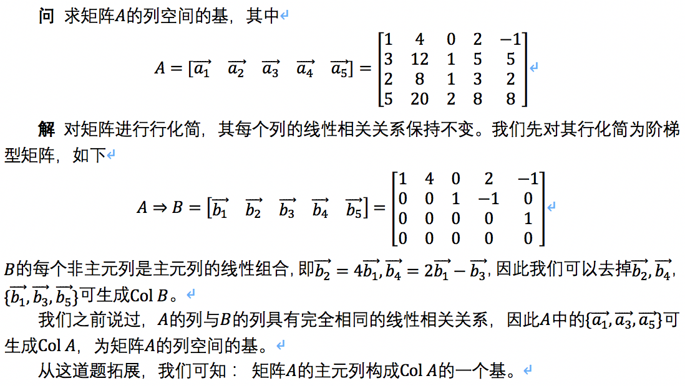
1.4行空间的基#
\(\quad\)若两个矩阵\(A\)和\(B\)等价，则它们的行空间相同。若\(B\)是阶梯型矩阵，则\(B\)的非零行构成\(A\)的行空间的一个基同时也是\(B\)的行空间的一个基。
\(\quad\)要求一个矩阵\(A\)的行空间的一个基，通常是将\(A\)行变换为阶梯型矩阵\(B\)，判断主元位置来确定，做法和求矩阵的列空间的基相似，但是又不同。例子如下：
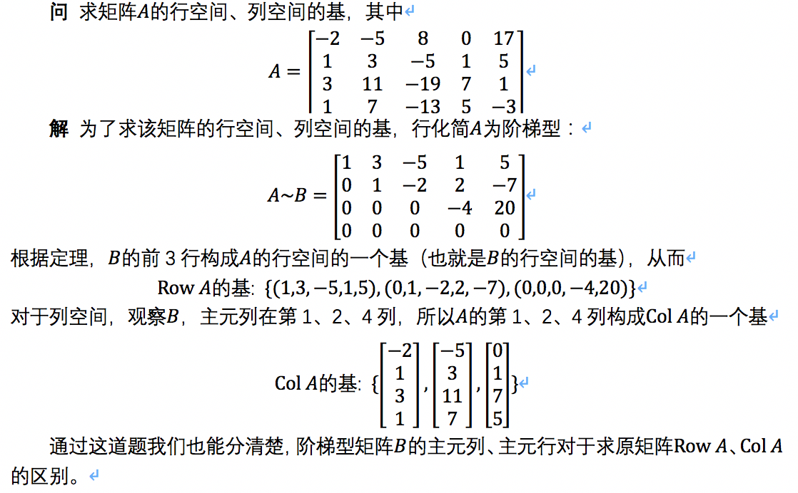
1.维数#
\(\quad\)若向量空间\(V\)有一组基含\(n\)个向量，则\(V\)的每一组基一定恰好含有\(n\)个向量。
\(\quad\)若向量空间\(V\)由一个有限集生成，则\(V\)称为有限维的，\(V\)的维数写为\(dimV\)，是\(V\)的基向量的个数。零向量空间\(\{\mathbf{0}\}\)的维数定义为零。如果\(V\)不是由一有限集生成的，则称\(V\)为无穷维的。
\(\quad\)例如，\(\Bbb{R}^{3}\)的子空间可用维数分类，如下：
零维子空间。只有零子空间是零维子空间。
一维子空间。任一由单一非零向量生成的子空间，这样的子空间是经过原点的直线。
二维子空间。任一由两个线性无关向量生成的子空间，这样的子空间是通过原点的平面。
三维子空间。只有\(\Bbb{R}^{3}\)本身是三维子空间，由可逆矩阵定理，\(\Bbb{R}^{3}\)中任意3个线性无关向量生成整个\(\Bbb{R}^{3}\)。
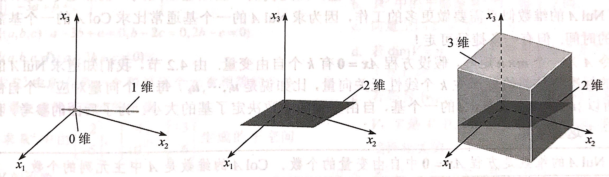
\(NulA\)的维数是方程\(A\mathbf{x}=\mathbf{0}\)中自由变量的个数，\(ColA\)的维数是\(A\)中主元列的个数。
2.秩#
\(\quad\)矩阵\(A\)的秩即\(A\)的列空间的维数，记作rankA。
\(\quad\)秩定理：\(m\times n\)矩阵\(A\)的列空间和行空间维数相等，这个公共的维数（即\(A\)的秩）还等于\(A\)的主元位置的个数且满足方程：
也可理解为：{主元列个数}+{非主元列个数}={列的个数}。
\(\quad\)秩定理是处理线性方程组的信息的一个有力工具。例如：
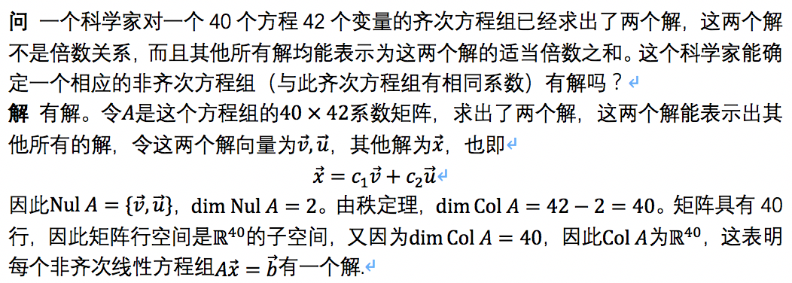
2.1秩和可逆矩阵定理#
\(\quad\)我们将矩阵的秩和可逆矩阵定理联系起来。一个矩阵如果可逆，说明有\(n\)个主元，说明秩为\(n\)，当一个\(n\times n\)矩阵秩为\(n\)时，称之为满秩矩阵。我们再对可逆矩阵定理做拓展：
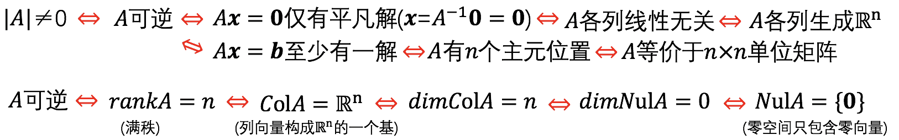
2.2秩一矩阵#
\(\quad\)当一个矩阵秩为1，我们称它为秩一矩阵。秩一矩阵易于分解为一个列向量乘以一个行向量，类似\(A=\mathbf{u}\mathbf{v}^{T}\)。
\(\quad\)例如矩阵\(A=\begin{bmatrix}{}5 & 8 & 9\\15 & 24 & 27\end{bmatrix},B=\begin{bmatrix}2 & -1 & 8\\
4 & -2 & 16\\
6 & -3 & 24
\end{bmatrix}\)，可以被分解为两个向量相乘：
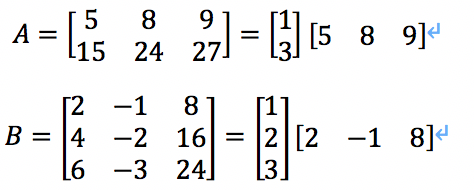
\(\quad\)秩一矩阵可以组合为其他矩阵，例如想得到一个\(5\times 10\)的秩为3的矩阵，可用3个不同的\(5\times 10\)的秩一矩阵相加得到。
2.3数值计算#
\(\quad\)目前我们计算一个矩阵的秩的方法是计算其主元列个数，但是这只适用于手工计算，在面对现实问题并不太适合。
\(\quad\)比如矩阵\(\begin{bmatrix}5 & 7\\5 & x\end{bmatrix}\)中的\(x\)如果没有被当做7精确地存储在计算机中，那么秩可能为1或2，这依赖于计算机是否将\(x-7\)当做零处理。一个可靠而有效的方法是由矩阵的奇异值分解来确定，MATLAB计算矩阵的秩的源码如下所示：
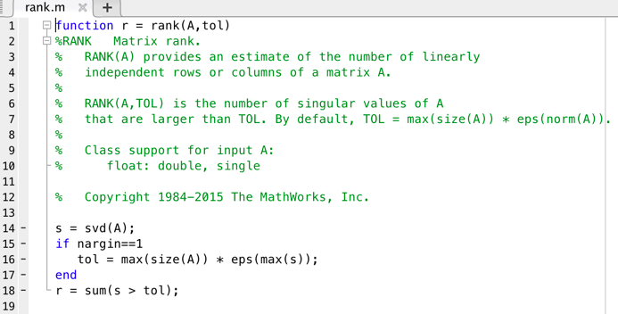
2.4秩的理解#
\(\quad\)一个矩阵的秩即该矩阵的列空间的维数。计算起来并不困难，但是我们应该如何去理解。
\(\quad\)我们常说，要解\(n\)个变量，需要\(n\)个方程，但经过线性代数学习之后，我们知道一个线性方程组是否有解，是看系数矩阵是否满秩，而这个秩就代表着方程中真正有用的部分。
\(\quad\)举一个例子。左边为方程组，右边为其增广矩阵：
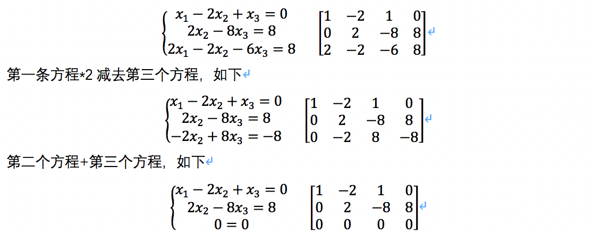
\(\quad\)这么一看，不太对啊，怎么解不出来了，这是因为第三个方程在原方程组中是个“多余”的方程，它本身是能够通过另外两条方程线性组合表示出来的，因此这个方程组真正有用的就是前两条，方程的秩为2。
\(\quad\)秩是矩阵的列空间的维数，也就是矩阵中最大不相关的向量个数。满秩的话就是指矩阵中所有的列向量彼此都线性无关，方程中不存在“多余”的方程，那么方程经过行变换化为阶梯型矩阵自然就能解出。